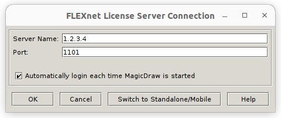
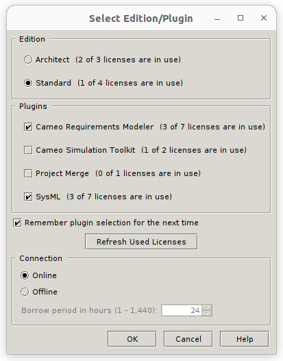

ccpublisher service installation guide
Requirements:
Teamwork Cloud and Cameo Collaborator services
A user/password set for Teamwork Cloud that has R/W access to the targeted resources (MD and CC)
Ubuntu Desktop 22.04 LTS (either physical or virtual)
(this) ccpublisher package
Note: the Ubuntu setup must be able to reach Teamwork Cloud server’s network endpoint and must be reachable from modelers
Service installation outline
The procedure describes how to install the service under Ubuntu Linux (22.04 LTS), even though in principle any GNU/Linux distros should be working.
Even if the service can run headless, MagicDraw requires a desktop environment.
The guide implies that the same unprivileged user is used to install MagicDraw, service. The same user should be configured to automatically login into the desktop.
Install MagicDraw
Configure MagicDraw to allow headless operations
Install the required system packages and ccpublisher package into a virtualenv
Configure the service
Test the service
Set up a systemd unit file to start up the service automatically
Install MagicDraw
Follow the official documentation here: https://docs.nomagic.com/display/NMDOC/Installing+modeling+tools
Suggested target location: /opt/magicdrawXXXX (where XXXX is the version, eg: 2022x)
Configure MagicDraw for headless operation
Headless (or batch mode) allows the service to start MagicDraw without UI and hence retain full control of its execution.
Floating license
In case a floating license is used, care should be taken to configure an automated borrowing. This could be done by launching magicdraw and checking the Automatically login each time MagicDraw is started:
Select the features required and confirm:
MagicDraw can now be closed.
Testing a headless execution
A test to check whether MagicDraw can start without user intervention:
$ cd /opt/magicdrawXXXX/plugins/com.nomagic.collaborator.publisher
$ ./publish
The execution takes several seconds and it should end indicating a path for the Log File. No window/UI should have opened.
Note down the location of the log, it is required afterwards.
Install required system packages and ccpublisher
Clone ccpublisher’s repository:
$ git clone https://github.com/amdx/ccpublisher.git
$ cd ccpublisher
Install python3 and python3-dev. Under Ubuntu 22.04 this will pull python 3.10.6:
$ sudo apt install python3-dev python3-venv
And create a virtualenv:
$ sudo mkdir /opt/ccpublisher
$ sudo chown <user> /opt/ccpublisher
$ python3 -m venv /opt/ccpublisher
Create a folder for the configuration files and copy the samples into it:
$ mkdir /opt/ccpublisher/etc
$ cp examples/{config.yaml,template.properties} /opt/ccpublisher/etc
And finally install the service:
$ /opt/ccpublisher/bin/pip install .
Service configuration
Two configuration files direct the process (they can be found in /opt/ccpublisher/etc):
config.yaml: base configuration for the service
template.properties: properties file template that the service interpolates and passes to com.nomagic.collaborator.publisher
config.yaml
An annotated version of the configuration:
# HTTP listening endpoint (API and UI)
api:
listen_address: 0.0.0.0
port: 9999
publisher:
# Path of the properties template file. Paths are relative to /opt/ccpublisher (see below systemd's unit file)
template: etc/template.properties
# Location of the script "publish", check the path of MagicDraw's base installation
script: /opt/magicdrawXXXX/plugins/com.nomagic.collaborator.publisher/publish
# Maximum number of jobs that can be enqueued
queue_maxsize: 5
fileobserver:
# Path to the log file produced by MagicDraw (as shown when testing the headless mode)
file_path: /home/magicdraw/.magicdraw/2021x/magicdraw.log
# How many lines of the log to show
backlog: 15
# A TWC user and password set, must be able to read and write/create resources
auth:
username: user
password: password
# REST interface to TWC
twc:
api_url: https://twc.local:8111/osmc/
extra_context:
# URL of CC's web interface
cc_base_url: https://cc.local:8443/collaborator/document/
template.properties
This file is taken directly from the example (/opt/magicdrawXXXX/plugins/com.nomagic.collaborator.publisher/template.properties) and it is being interpolated by the service once launching a publishing session.
The following variables can be used:
{{ auth.username }}: TWC’s user (taken from config.yaml)
{{ auth.password }}: as above, password
{{ profile.md.name }}: name of the MD resource being processed
{{ profile.md.category_path }}: category path of the MD resource being processed
{{ profile.stereo_data.scope }}: list of scopes configured in the scope tag of the <<ccPublisher>> stereotype
{{ profile.stereo_data.template_name }}: template name configured in the template tag of the <<ccPublisher>> stereotype
Make sure that all the properties listed in the file are applicable to the target setup.
Test the service
Run the service with:
$ cd /opt/ccpublisher/
$ bin/ccpublisher etc/config.yaml
And open the link: http://localhost:9999
Configure systemd to start the service at boot
Install the provided service file:
$ sudo cp examples/ccpublisher.service /etc/systemd/system/
$ sudo systemctl enable ccpublisher
$ sudo systemctl start ccpublisher
Modify user and group to match the target user.